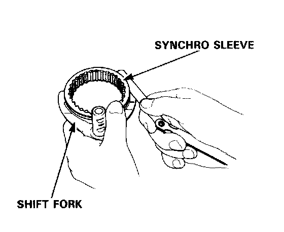
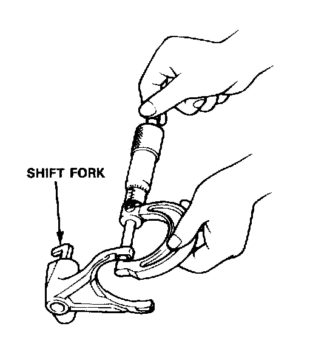
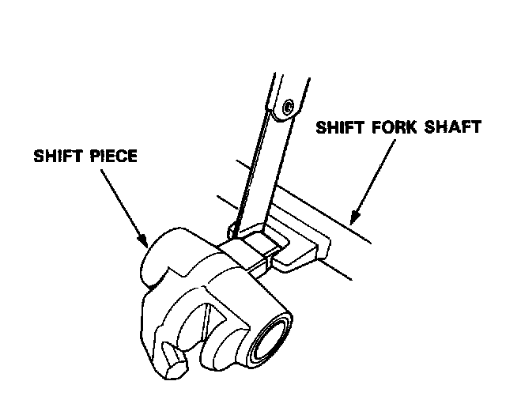
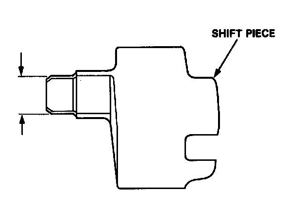

Shift Fork: Testing and Inspection
Shift Fork, Shift Piece Clearance InspectionNOTE: The synchro sleeve and synchro hub should be replaced as a set.

1. Measure the clearance between the each shift fork and its matching synchro sleeve.
Standard: 0.45-0.65 mm (0.018-0.026 in)
Service Limit: 1.0 mm (0.039 in)

2. If the clearance exceeds the service limit, measure the thickness of the shift fork fingers.
Standard: 7.4-7.5 mm (0.291-0.295 in)
- If the thickness of the shift fork fingers is less than the standard, replace the shift fork with a new one.
- If the thickness of the shift fork fingers is within the standard, replace the synchro sleeve with a new one.

3. Measure the clearance between the shift piece and shift fork shafts.
Standard: 0.2-0.5 mm (0.008-0.020 in)
Service Limit: 0.8 mm (0.031 in)

4. If the clearance exceeds the service limit, measure the width of the shift piece.
Standard: 11.9-12.0 mm (0.469-0.472 in)
- If the width of the shift piece is less than the standard, replace the shift piece with a new one.
- If the width is within the standard, replace the shift fork shaft with a new one.